异地子女（发起者）
痛点：视频指导效率低、看不清现场、害怕盲目乱按、不放心陌生人随便上门。
- 快速远程求助
- 服务进度全程透明
- 远程核验敏感操作
SERVICE DESIGN / UIUX CASE STUDY
面向异地家庭的社区数字帮办服务设计
当子女远程教不会时，让社区可信的人到父母身边解决。
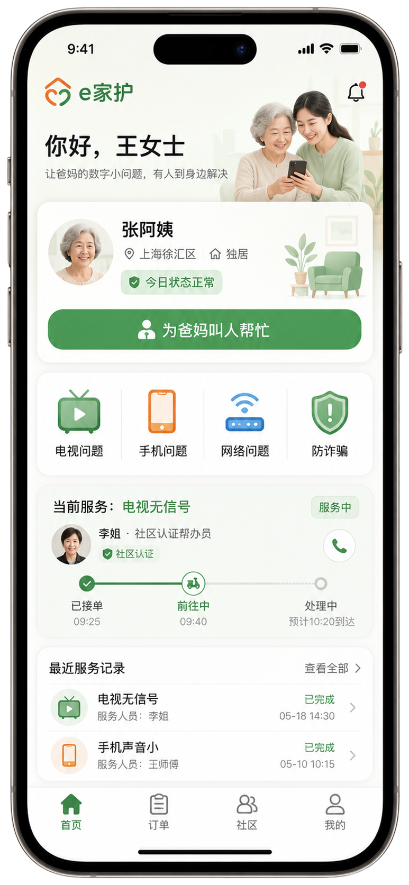
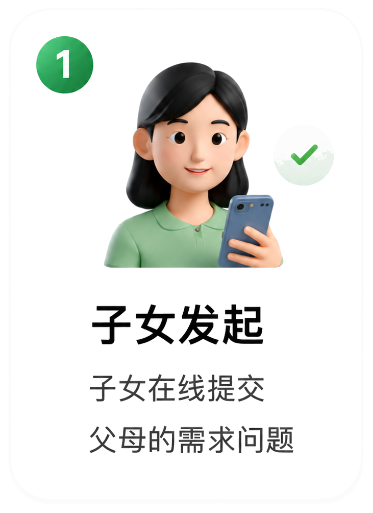
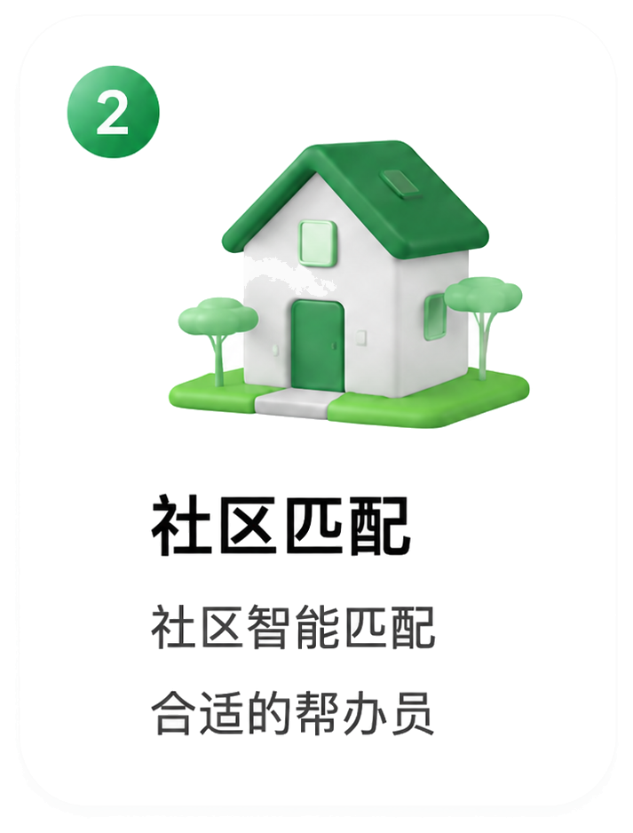
Rodin | 项目负责人 / 产品策划 / UX设计
作为项目负责人，我将抽象的社会老龄化议题，收束为连接“异地子女、老年父母、社区帮办员”的三端协同系统。主导了从核心断点定义、适老化全链路体验设计，到安全信任机制构建的全过程，让服务真正具备可复制与落地价值。
重新定义“老人不会用”的本质是“远程帮助链路失效”，明确了“线上发起+线下社区帮办”的产品定位与系统边界。
拆解异地子女、老年父母、社区帮办员三方痛点，主持设计了包含一键求助、可信追踪、敏感操作远程确认的完整服务蓝图。
围绕社区认证、服务码核验、敏感操作确认和结果回执，建立可以解释、可以执行、可以被监督的服务边界。
RESEARCH EVIDENCE
我们拒绝让研究停留在纸面上。通过三轮真实场景的深度推演与角色拆解，我们明确了异地子女、独居老人与社区帮办员之间的权责边界。将抽象的社会痛点，转化为每一个可触、可信、安全的服务触点。
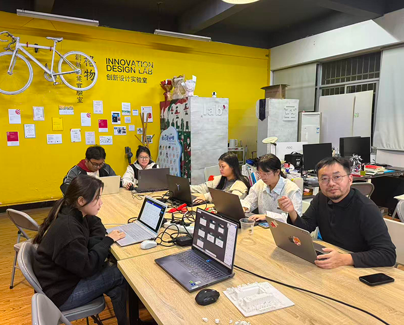
多轮追问"为什么子女明明在帮，问题还是解决不了"，将问题收束到异地照护断点上。
深入拆解同一问题背后，异地子女、老人、社区帮办员三方各自面对的焦虑和痛点需求。
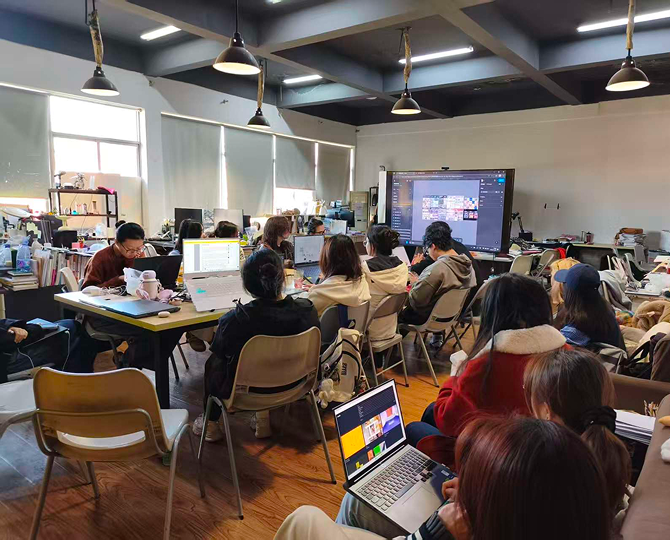
以“电视无信号”为主场景，在实验室进行完整模拟，验证线上发起至线下帮办的全链路闭环。
PROBLEM FRAMING
我们通过用户旅程图与故事版梳理发现，传统的远程指导之所以失败，核心在于三大断点：现场缺位、信任缺位、过程缺位。
痛点：视频指导效率低、看不清现场、害怕盲目乱按、不放心陌生人随便上门。
痛点：屏幕状态说不清、不敢随意乱点、对陌生人戒备心强、害怕给子女添麻烦。
痛点：任务详情不明确、排查无标准化清单、害怕涉及老人财产隐私引发责任风险。
STORYBOARD JOURNEY
我们以“电视无信号”这一高频且典型的沟通阻断场景切入，模拟从老人求助到结果回执的 6 大服务节点。通过实景链路的推演，团队得以在每一个触点上严密推敲多角色、安全机制与边界控制，将原本低效的远程指导转化为确定、可信的社区服务。
电视显示“无信号”，老人分不清遥控器和机顶盒，也不敢乱按。
子女视频指导二十分钟仍无法判断现场状态，双方情绪变得焦虑。
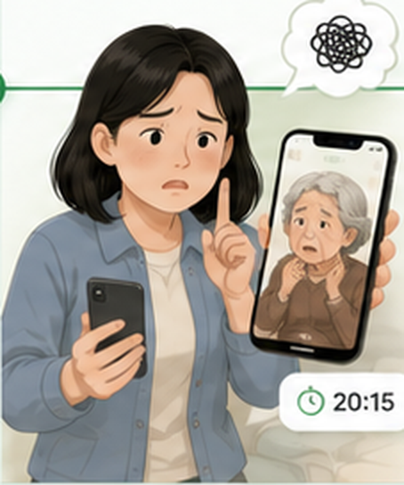
选择电视问题，提交语音、图片或“我也说不清”，系统匹配社区帮办员。
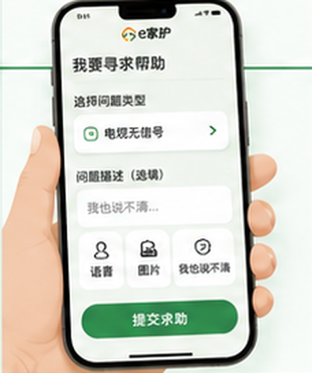
帮办员信息、服务码、预计到达时间同步给子女和老人，降低陌生上门风险。
按清单检查信号源、电源、机顶盒、遥控器和网线，必要时触发敏感确认。
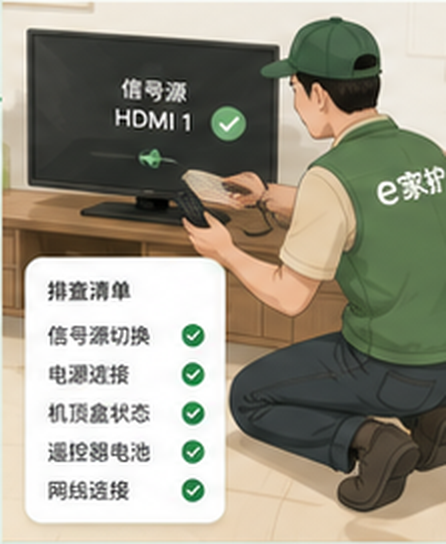
上传照片和处理说明，生成大字提示卡，把一次服务转化为可学习经验。
CORE PRODUCT SHOWCASE
面对异地照护的复杂断点，我们跳出传统老人 App 的单一设计视角，重构了异地子女、老年父母、社区帮办员与社区后台的协同机制。界面设计聚焦于消除各方的现场焦虑——让子女端强于掌控、老人入口归于极简、帮办员端明晰边界，用系统合力对抗数字鸿沟。
首页直观呈现父母当前状态及历史服务记录。当呼叫上门时，子女可实时在手机端掌握帮办员位置及服务节点（已接单、前往中、已到达、处理中），彻底解决“远程看不见”的焦虑。


老人入口用直白动作语言降低学习压力；帮办员端通过任务详情、排查清单、风险提示和回执上传，保证服务过程可执行、可监管、可复盘。


帮办员必须实名且归属辖区物业或服务站，上门前向子女端、老人端双重同步头像与服务码，建立线下天然信任。
系统硬性规定：涉及验证码、转账或支付时，帮办员端强行拦截，必须触发子女端远程视频/短信二次确认，死守安全底线。
CASE STUDY BOARDS
以下为本项目在设计过程中最终产出的全套标准展板，完整呈现了“e家护”的系统逻辑与交付原型。
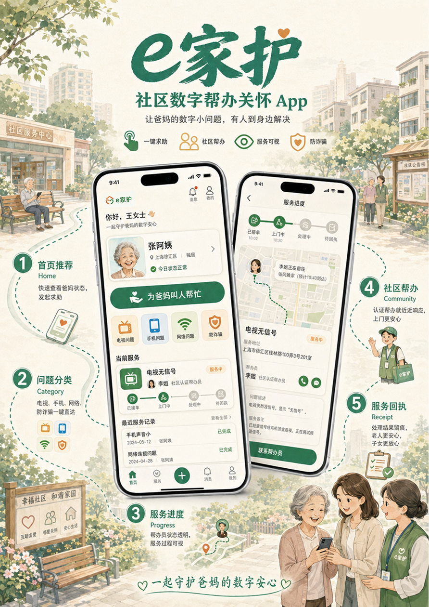
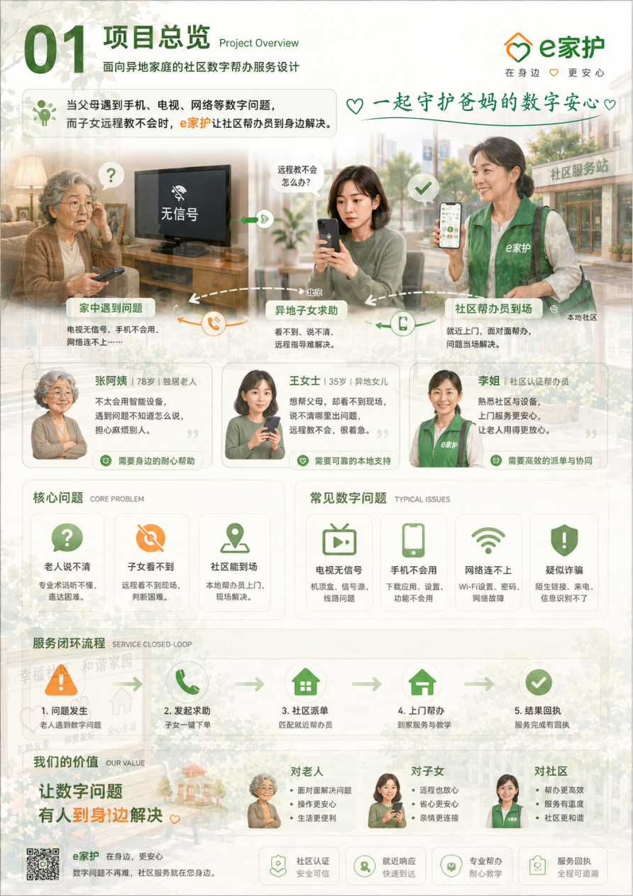
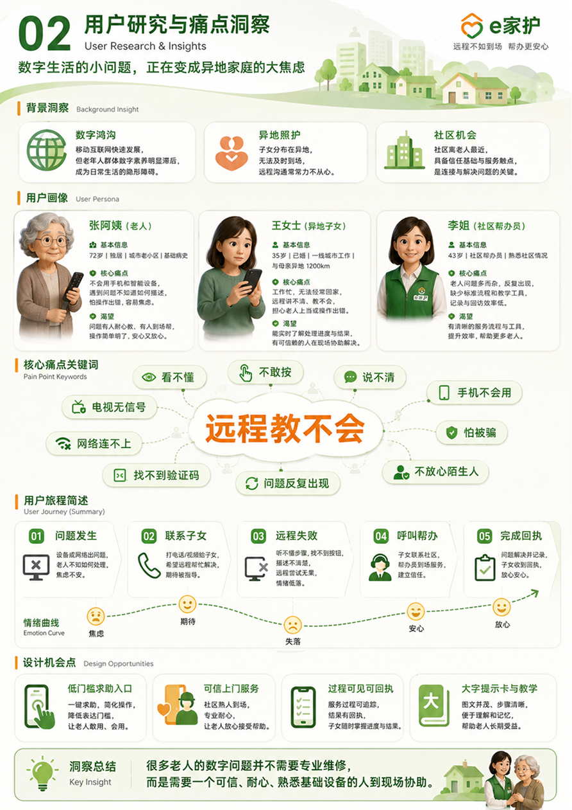
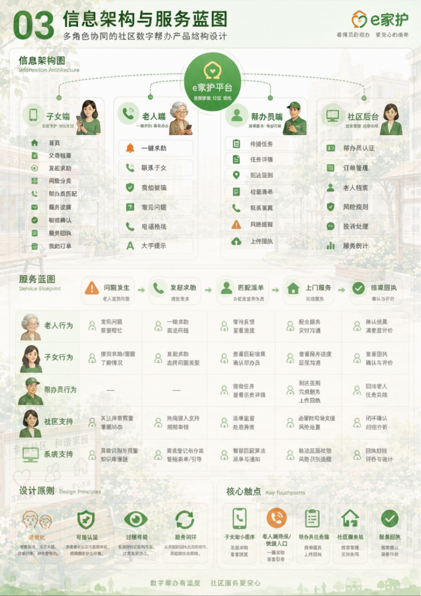
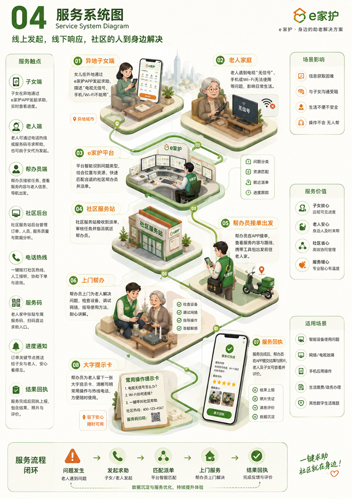
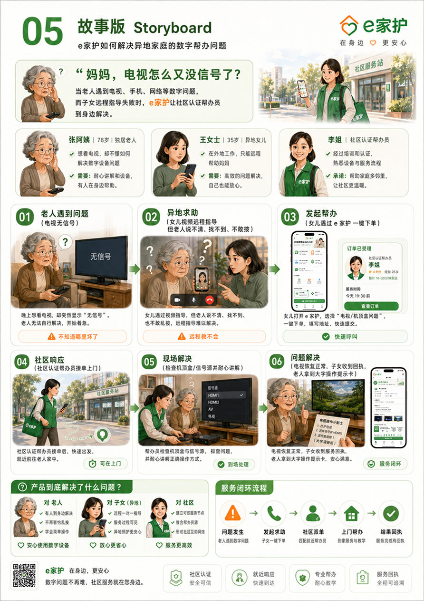
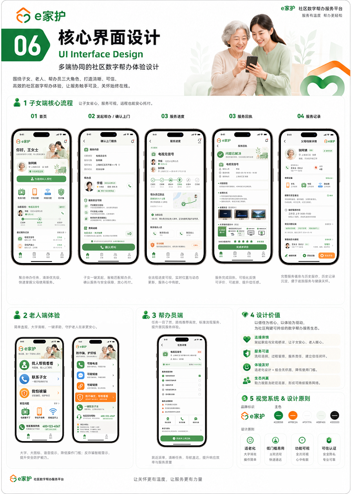
FINAL VALUE
技术的终极目的，是让离家的人安心，让留下的人安全。e家护的本质从未试图构建一个庞大繁琐的工具体系，而是用克制的设计，在异地家庭与冷冰冰的‘数字鸿沟’之间，架起一座由社区承接的信任桥梁。通过‘远程发起、到场解决、过程可控、结果透明’的闭环，我们把原本充满焦虑、反复且无能为力的长途电话，重构为触手可及的社区温情，让数字照护具备真正的长效安心感